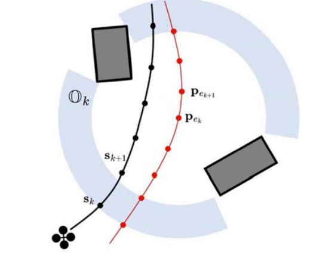
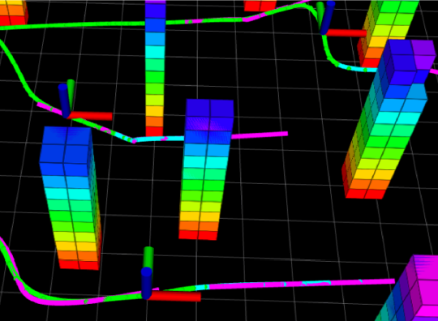

Xuewei Zhang (张学伟)
I aim to develop robotic systems that are more
About Me

I am currently enrolled in an integrated master's and doctoral program (direct-entry Ph.D.) at the School of Electrical and Information Engineering, Tianjin University, advised by Prof. Bailing Tian. I received my Bachelor's degree in Automation from Hebei University of Technology in 2019.
My research focuses on motion planning for aerial robotics, multi-robot coordination, end-to-end learning-based navigation, and model predictive control, with applications in formation maintenance and transformation, as well as autonomous area exploration and search.
I'm always open to discussions and collaborations with researchers from diverse backgrounds. If you're interested in my work, please feel free to contact me.
I expect to graduate in June 2026 and am actively seeking a postdoctoral position in a related field, where I can further advance my research and contribute to cutting-edge developments.
Research Highlights
Environmental-Adaptive & Gradient-Free Motion Planning
Navigation in unstructured environments introduces non-convex and discontinuous constraints where traditional gradient-based solvers often fail. We reformulate the problem using the MPPI framework for stochastic optimal control, eliminating gradient dependency and allowing GPU parallelization. With a novel CVaR-based risk metric, the robot dynamically adapts speed to obstacle distribution and environment risk.
Decentralized Multi-UAV Swarm Navigation
To enable scalable and robust swarm navigation, we propose a decentralized and asynchronous framework integrating mapping (occupancy & distance maps) with a two-stage planner. Tested on swarms up to 256 UAVs, our system supports complex missions like formation keeping and area exploration in real-world cluttered environments.
End-to-End Learning-Based Planning
To overcome latency and noise issues in modular frameworks, we design an end-to-end neural planner unifying perception, mapping, and trajectory optimization. It predicts polynomial trajectories with confidence scores at just 1.6 ms inference time, reaching up to 10 m/s in simulation and 8 m/s in real tests, and extends to target tracking and capture tasks.
Platforms

Publications
* Corresponding Author
— 2025 —
 |
RAPA-Planner: Robust and Efficient Motion Planning for
Quadrotors Based on Parallel RA-MPPI
X. Zhang, J. Lu, Y. Hui, H. Shen, L. Xu and B. Tian* IEEE Transactions on Industrial Electronics (TIE), 2025 Paper / Video |
 |
Sampling-Based Hierarchical Trajectory Planning for Formation Flight
Q. Liu, B. Tian, X. Zhang, J. Lu and Z. Li* IEEE Transactions on Intelligent Transportation Systems (TITS), 2025 Paper / Video |
 |
YOPOv2-Tracker: An End-to-End Agile Tracking
and Navigation Framework from Perception to Action
J. Lu, Y. Hui, X. Zhang, W. Feng, H. Shen, Z. Li and B. Tian* IEEE Transactions on Robotics (TRO), 2025 Paper / Video |
 |
YOPO-Rally: A Sim-to-Real Single-Stage Planner for Off-Road Terrain
J. Lu, Y. Hui, X. Zhang, W. Feng, H. Shen, Z. Li and B. Tian* IEEE Robotics and Automation Letters (RAL), 2025 Paper / Video |
 |
LiDAR-Based Decentralized Collaborative Localization and Mapping for Multi-AAV With Stable Triangle Descriptor
G. Chang, H. Shen, Y. Hui, X. Zhang, J. Lu, H. Lu and B. Tian* IEEE Transactions on Instrumentation and Measurement (TIM), 2025 Paper |
— 2024 —
 |
DEMO-PAST: A Decentralized Multi-MAV Online Navigation System using Parallel Strategy Acceleration
X. Zhang, B. Tian*, H. Lu, H. Shen and J. Lu IEEE Transactions on Intelligent Vehicles (TIV), 2024 Paper / Video |
 |
A Gradient-Free and Parallel Hierarchical Motion Planning Framework for Quadrotor Swarm
X. Zhang*, Q. Liu, H. Cao and B. Tian International Conference on Control, Automation, Robotics and Vision (ICARCV), 2024 Paper |
 |
You Only Plan Once: A Learning-Based One-Stage Planner With Guidance Learning
J. Lu, X. Zhang, H. Shen and B. Tian* IEEE Robotics and Automation Letters (RAL), 2024 Paper / Video |
 |
DPPM: Decentralized Exploration Planning for Multi-UAV Systems Using Lightweight Information Structure
Y. Hui, X. Zhang, H. Shen, H. Lu and B. Tian* IEEE Transactions on Intelligent Vehicles (TIV), 2024 Paper / Video |
 |
A Distributed Algorithm for Multi-Robot Task Allocation via Weighted Buffered Voronoi Partition
H. Cheng, B. Tian*, X. Zhang and H. Shen IEEE Transactions on Industrial Electronics (TIE), 2024 Paper / Video |
 |
Event-Triggered MPC with Nonlinear High-Gain Disturbance Observer for Trajectory Tracking of Quadrotor
L. Xu, B. Tian*, Z. Li, X. Zhang and Q. Liu Chinese Control Conference (CCC), 2024 Paper |
— 2023 —
 |
LPNet: A Reaction-Based Local Planner for Autonomous Collision Avoidance Using Imitation Learning
J. Lu, B. Tian*, H. Shen, X. Zhang and Y. Hui IEEE Robotics and Automation Letters (RAL), 2023 Paper / Video |
 |
Real-Time Instance-Aware Segmentation and Semantic Mapping on Edge Devices
J. Lu, B. Tian*, H. Shen and X. Zhang IEEE Transactions on Instrumentation and Measurement (TIM), 2023 Paper / Video |
|  |
Safe Tracker: A Robust Aerial System for Safe Tracking in Cluttered Environments
Y. Hui, B. Tian*, X. Zhang H. Lu and H. Shen Chinese Control Conference (CCC), 2023 Paper |
— 2022 —
 |
Multi-UAV decentralized online trajectory planning in complex unknown obstacle-rich environments
X. Zhang B. Tian*, H. Lu, H. Shen and Q. Z Scientia Sinica Informationis (SSI), 2022 Paper / Video |
— 2021 —
|  |
Decentralized motion planning for multi quadrotor with obstacle and collision avoidance
X. Zhang H. Shen, G. Xie, H. Lu and B. Tian* International Journal of Intelligent Robotics and Applications (IJIRAP), 2021 Paper |
 |
Flight in GPS-denied environment: Autonomous navigation system for micro-aerial vehicle
H. Lu, H. Shen*, B. Tian, X. Zhang Z. Yang and Q. Z Aerospace Science and Technology (AST), 2021 Paper |
Project
2024.01 - Present | Research on Shared Environment Modeling and Cooperative Behavior Planning
With the objective of enabling POU (Point-of-Use) material picking and distribution on production and assembly lines via human-robot arm collaboration.
Personal Contributions:
- Developed a high-frequency (>100Hz) motion planning algorithm for a 7-DOF robotic arm using OMPL, enabling robust collaborative behavior in dynamic environments.
- Designed a POU material picking and distribution process using a custom API, allowing real-time coordination with human operators and the material inventory system.

2024.01 - 2024.04 | Terrain-Adaptive Low-Altitude Path Planning for a Fixed-Wing UAV
Aimed at enabling covert low-altitude flight of a fixed-wing UAV in mountainous terrain. The project involved generating safe waypoints based on Digital Elevation Maps (DEM) while under dynamic and terrain-following constraints, including a cruise speed of 0.6 - 0.9 Mach, waypoint intervals over 2.5 km, and terrain clearance under 100 m.
Personal Contributions:
- Modeled terrain-following constraints and flight performance limits to ensure physically feasible and safe low-altitude trajectories over mountainous terrain.
- Developed a terrain-following route planner for a fixed-wing UAV using the Time Elastic Band (TEB) algorithm and g2o-based trajectory optimization within the defined safe flight envelope.
- Deployed the planner on a ROS platform with Unity-based simulation for real-time visualization and performance validation.


2023.10 - 2024.04 | Hardware-in-the-loop Simulation System for UAV Swarm Tasks in Airport and Port Operations
This project aimed to develop a high-fidelity hardware-in-the-loop (HIL) simulation system for UAV swarms performing sequential mission tasks in airport and port environments. The system enables integrated verification of core swarm capabilities, including communication networking, formation keeping, task allocation, collision avoidance, trajectory planning, and performance evaluation. A Unitybased 3D visualization interface was also developed for real-time monitoring.
Personal Contributions:
- Designed a coalition game-based task allocation algorithm for UAV swarms, enabling rapid and autonomous decision-making in dynamic, time-critical scenarios.
- Developed a scalable collision avoidance and trajectory planning framework supporting large-scale swarm simulations with up to 256 UAVs.
- Implemented a finite state machine (FSM) integrated with a behavior tree framework for sequential, modular coordination of swarm task modules.
- Built a HIL simulation platform using 32 NVIDIA Jetson Orin NX running PX4-based flight units for real-time control of physical nodes, along with 224 virtual UAVs simulated on a PC.

2023.08 | The 3rd Air Force "Unmanned Contenders" Intelligent UAV Swarm System Challenge
The challenge aimed to evaluate intelligent UAV swarm coordination and precision strike capabilities in dynamic mission scenarios. A group of 3 - 5 quadrotors autonomously searched for designated targets within a competition zone. Upon detecting targets, strike commands were relayed to fixed-wing UAVs loitering overhead, which then executed simulated attacks.
Personal Contributions:
- Designed and built quadrotor platforms from the ground up, integrating PX4 firmware and tuning PID parameters for optimal flight performance. Each quadrotor is equipped with a C-RTK 9Ps GNSS module, Intel RealSense D435i depth camera, CUAV V5+ flight controller, and an NVIDIA Jetson Xavier onboard computer for autonomous operation.
- Developed a custom ground control station using ROS-Rviz and Qt, supporting real-time UAV state monitoring, mission visualization, and unified command dispatch for multi-UAV coordination.
- Developed a Coverage Path Planning Algorithm (CPPA) based on the WGS-84 for accurate waypoint generation, and transmitted waypoints to PX4 via MAVROS using the MAVLink protocol for onboard execution.

2022.10 - 2023.10 | Decentralized Multi-UAV Cooperative Exploration in GPS-Denied Environments
With the goal of enabling decentralized multi-UAV cooperative exploration in large-scale forest environments (~5000 m³) under GPS-denied conditions.
Personal Contributions:
- Designed and built a SLAM-capable UAV platform equipped with a Livox Mid-360 LiDAR, Pixhawk flight controller, network communication module, and an onboard Nvidia Jetson Orin NX for autonomous localization and navigation.
- Implemented a high-speed concurrent communication bridge based on the ZeroMQ framework to support TCP/IP and UDP message relaying among ROS1 nodes, serving as a lightweight and efficient alternative to the ROS1 MultiMaster communication setup.

2022.07 | “Feihang Cup” UAV Swarm Challenge, 1st Intelligent Equipment & Systems Design Competition
The competition was conducted in a UE4-based simulation environment. Teams interfaced with the virtual scene via ROS nodes to receive real-time environmental data and programmed four UAVs to perform autonomous navigation and collaborative target search.
Personal Contributions:
- Developed an incremental topological map to represent explored and unexplored regions, enabling lightweight communication for consistent environmental maintenance.
- Designed a hierarchical motion planning algorithm using the Model Predictive Path Integral (MPPI) framework for UAVs to ensure safe and efficient navigation in obstacle-dense environments.

2020.05 - 2022.04 | Mission Planning for Coaxial Twin-Rotor UAV Swarm Systems
A coaxial twin-rotor UAV swarm (≥12 units) forms a coordinated formation to perform situational awareness, target reconnaissance, and dynamic strike missions.
Personal Contributions:
- Designed and implemented formation keeping and transformation algorithms for UAV swarms, achieving reliable and smooth transitions between formations with precise relative positioning and collision avoidance capabilities.
- Implemented coordinate transformation between WGS-84 and Cartesian coordinate systems, and established a unified Home point setting for the UAV swarm system.
Honors
-
🏆
Second Prize, Tianjin University Doctoral Academic Forum, 2024
-
🚁
First Place, “Feihang Cup” UAV Swarm Challenge, 1st Intelligent Equipment & Systems Design Competition, 2022
-
📄
Excellent Paper Award, National Postdoctoral Academic Forum on IoT and Wireless Communication Technology, 2020
-
💡
Third Prize, 11th ICAN International Contest of Innovation, 2017
-
🎓
Postgraduate Academic Scholarship, Tianjin University, 2019-2025
Academic Services
🤝Volunteer
- Young Scientists Forum, in conjunction with the International Conference on Guidance, Navigation and Control (ICGNC), 2020
📝Reviewer
- IEEE Transactions on Industrial Electronics (TIE)
- IEEE Robotics and Automation Letters (RA-L)
- IEEE Transactions on Industrial Informatics (TII)
- IEEE/ASME Transactions on Mechatronics (TMECH)
- IEEE Transactions on Intelligent Vehicles (TIV)
- International Conference on Guidance, Navigation and Control (ICGNC)
- Chinese Control Conference (CCC)
🎤Presentation
- “A Gradient-Free and Parallel Hierarchical Motion Planning Framework for Quadrotor Swarm”
2024, 18th International Journal of Intelligent Robotics and Applications (IJIRAP), Dubai - “Motion Planning and Swarm Optimization for UAVs in Complex Environments”
2024, Doctoral Academic Forum, Tianjin University - “State Estimation and Control for Micro Aerial Vehicles in GPS-denied Environments”
2020, International Conference on Wireless Communications and Signal Processing (WCSP), Nanjing